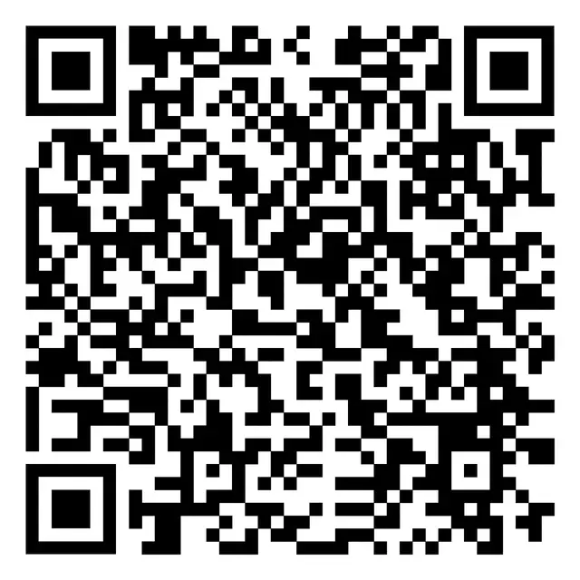
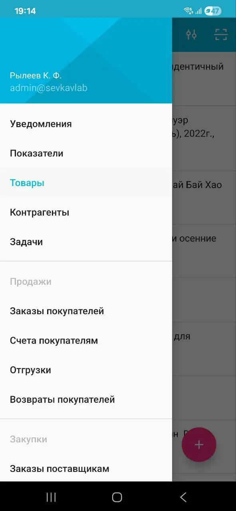
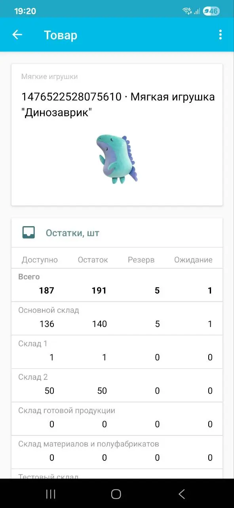
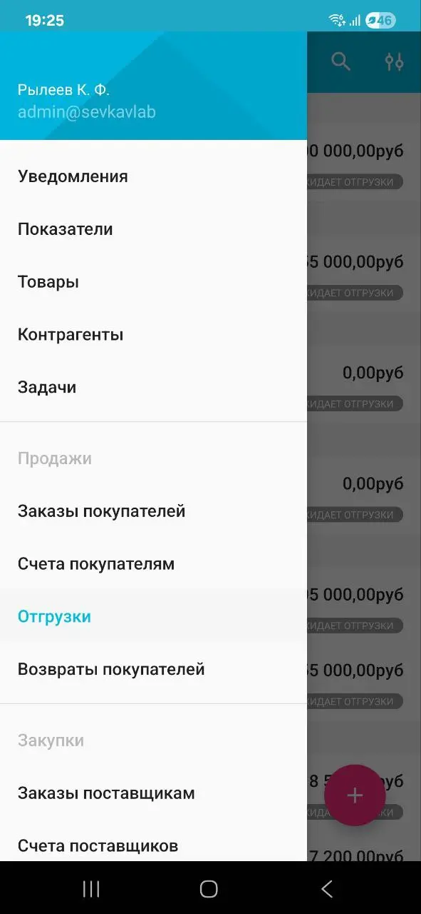
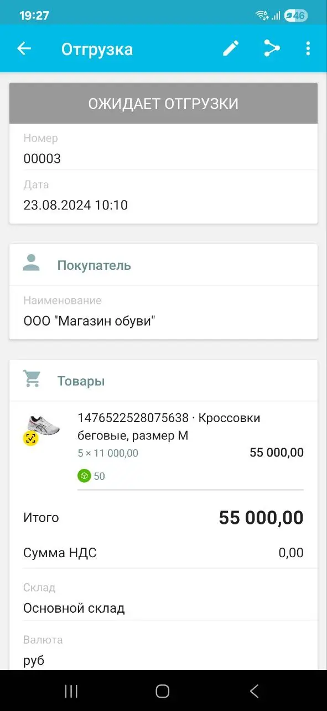
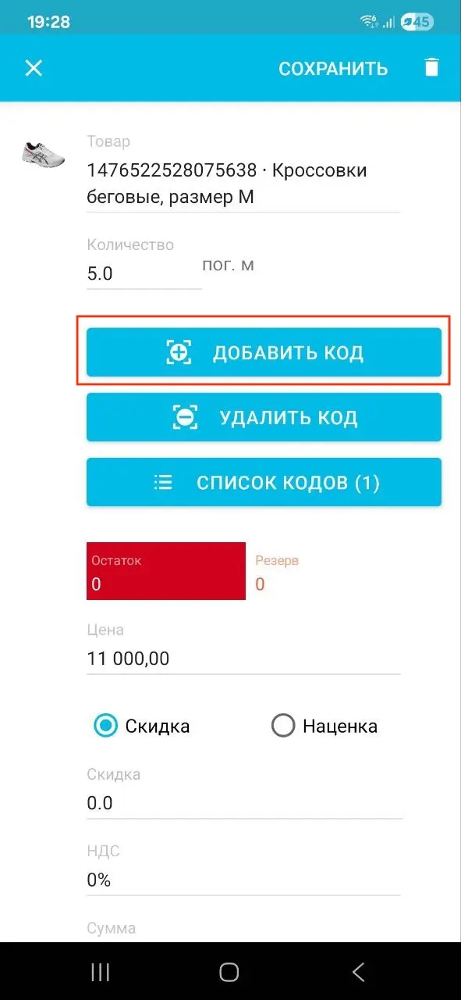

Мобильное приложение МойСклад совмещает в себе возможности веб-версии МоегоСклада, ТСД, системы управления задач и мессенджера. Установите приложение МойСклад на мобильное устройство, чтобы в любой момент иметь доступ к документам, отчетам, заказам, показателям и следить за работой точек продаж.
Приложение подходит для сотрудников с разными ролями:
- Владелец бизнеса — следите за тем, какие точки открылись или закрылись, как идут продажи и какой результат дня.
- Управляющий или директор — проверяйте заказы, следите за работой сотрудников и ставьте задачи.
- Сотрудник — используйте телефон как замену ТСД для приемки, инвентаризации, работы на складе, на выезде или в торговой точке.
Мобильное приложение МойСклад доступно для устройств на Android и iOS, а также ТСД Atol Smart Pro/Lite.
Для работы приложения требуется постоянное интернет-соединение. Подробнее о технических требованиях к оборудованию см. Мобильное приложение iOS и Мобильное приложение Android.
Установка и настройка мобильного приложения МойСклад
- Скачайте бесплатно мобильное приложение МойСклад в магазине приложений.

Или отсканируйте QR-код.

- Запустите приложение.
- Введите логин и пароль, которые используете при авторизации в веб-версии МоегоСклада. Нажмите Войти.
- В мобильном приложении МойСклад можно работать с теми данными, к которым у вас есть доступ в веб-версии. Возможности мобильного приложения и веб-версии МоегоСклада различаются. Полный список возможностей мобильного приложения приведен ниже.
Важно: для работы в мобильном приложении МойСклад необходимо, чтобы в веб-версии в настройках пользователя был включен Доступ по API. Изменять настройки может только пользователь с ролью Администратор.
Возможности мобильного приложения МойСклад
| Раздел | Возможности |
|---|---|
| Показатели |
|
| Товары |
|
| CRM |
|
| Документы |
|
| Задачи (нужна подключенная опция CRM) |
|
| Уведомления |
|
| Прочие возможности |
|
Часто задаваемые вопросы
Наиболее распространенные вопросы о работе в мобильном приложении МойСклад.
Как посмотреть остаток товара?
Чтобы узнать остаток товара:
- В мобильном приложении МойСклад нажмите на значок меню (три полоски) слева вверху и перейдите в раздел Товары.

- В списке товаров выберите нужный. Откроется карточка товара. В ней будет указан остаток этого товара.

Как добавить коды маркировки в Отгрузку?
Чтобы добавить коды маркировки в Отгрузку:
- В мобильном приложении МойСклад нажмите на значок меню (три полоски) слева вверху и перейдите в раздел Отгрузки.

- В списке Отгрузок выберите нужную. Откроется карточка документа.
- Нажмите на значок редактирования (карандаш).

- В разделе Товары нажмите на товарную позицию и выберите Добавить код.

- Отсканируйте код маркировки.
- Нажмите Сохранить вверху.
Почему для точки продаж отображается неактуальная смена?
Отображается последняя закрытая или открытая на данный момент смена. Если отображается смена, открытая на более раннюю дату, вероятно, у вас есть смена, которую не закрыли вовремя.
Чтобы закрыть смену:
- В веб-версии МоегоСклада перейдите в раздел Розница → Смены.
- Выберите в списке смену, которую нужно закрыть.
- Укажите дату и время закрытия смены.
- Нажмите на кнопку Сохранить.
Можно ли устанавливать и удалять решения в мобильном приложении МойСклад?
Устанавливать и удалять решения из Каталога решений можно только в веб-версии МоегоСклада. В мобильном приложении такой возможности нет.
Почему при сохранении документа возникает ошибка, если в нем больше ста позиций?
В мобильном приложении МойСклад для документов действует ограничение на количество строк (позиций) — не более ста. Чтобы сохранить документ, удалите часть позиций и создайте для них новый документ. Также можно воспользоваться веб-версией МоегоСклада.
Можно ли в приложении проверять коды маркировки?
Проверка кодов маркировки в мобильном приложении недоступна. В приложении можно добавить коды маркировки в Приемку и Отгрузку, но запустить проверку кодов маркировки можно только в веб-версии МоегоСклада.
На каких ТСД работает мобильное приложение МойСклад?
Мобильное приложение МойСклад на Android можно установить на Атол Smart.Lite и Атол Smart.PRO.
Что означает символ «восклицательный знак» возле точки продаж?
Восклицательный знак отображается возле точки продаж, если поступило уведомление из Кассы МойСклад. Например, не все документы были переданы в ОФД или нужно заменить фискальный накопитель. Проверьте Кассу, чтобы узнать больше о ее состоянии.